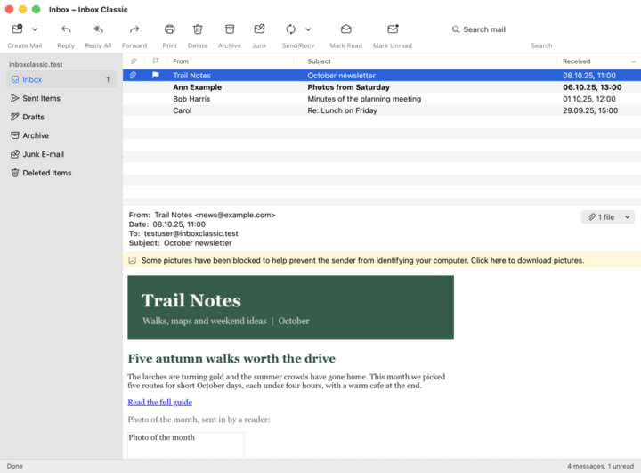

Okno główne
Części okna głównego: lista folderów, lista wiadomości, okienko odczytu, pasek narzędzi i pasek stanu.

- Lista folderów, po lewej, zaczyna się od Skrzynki odbiorczej i folderu Z flagą, a potem pokazuje pozostałe foldery. Przy dwóch lub więcej kontach na górze jest pozycja Wszystkie skrzynki odbiorcze, a pod nią wspólne widoki wiadomości wysłanych i wersji roboczych. Dalej znajduje się pozycja Z flagą oraz konta z pozostałymi folderami. Folder z nieprzeczytaną pocztą jest pogrubiony, a po jego nazwie widać liczbę nieprzeczytanych wiadomości.
- Lista wiadomości, u góry po prawej, zawiera wiadomości zaznaczonego folderu. Nieprzeczytane wiadomości są pogrubione. Kliknij nagłówek kolumny, aby według niej sortować, i kliknij go ponownie, aby odwrócić kolejność.
- Okienko odczytu, pod listą, pokazuje zaznaczoną wiadomość.
- Pasek narzędzi, u góry, zawiera najczęściej używane polecenia, takie jak Utwórz wiadomość, Odpowiedz i Wyślij/Odbierz, oraz pole wyszukiwania.
- Pasek stanu, na dole, podaje liczbę wiadomości, bieżące działanie Inbox Classic i ostatni napotkany problem.
Przeciągaj granice między częściami, aby zmienić ich rozmiary.
Aby zrobić miejsce na wiadomości, ukryj listę folderów: wybierz Widok > Lista folderów albo naciśnij ⌃⌘S. Przycisk paska bocznego na lewym końcu paska narzędzi ukrywa ją i przywraca. Gdy jest ukryta, wybierz Widok > Przejdź do folderu, aby otworzyć inny folder.
Menu są na pasku menu u góry ekranu. Kliknij wiadomość, folder lub konto prawym przyciskiem myszy, aby zobaczyć dostępne dla nich polecenia.
Liczba nieprzeczytanych wiadomości przy zwiniętym folderze uwzględnia także ukryte podfoldery. Tak samo działa licznik zwiniętego konta. Foldery Wiadomości-śmieci i Elementy usunięte są pomijane. Kliknij nazwę konta, aby rozwinąć lub zwinąć jego foldery.
Po uruchomieniu Inbox Classic pokazuje najnowszą wiadomość ze Skrzynki odbiorczej pierwszego konta albo z pozycji Wszystkie skrzynki odbiorcze, gdy masz kilka kont.
Aby otworzyć tę pomoc, wybierz Pomoc > Pomoc Inbox Classic albo naciśnij ⌘?. W innym oknie ten sam klawisz otwiera temat o tym oknie.